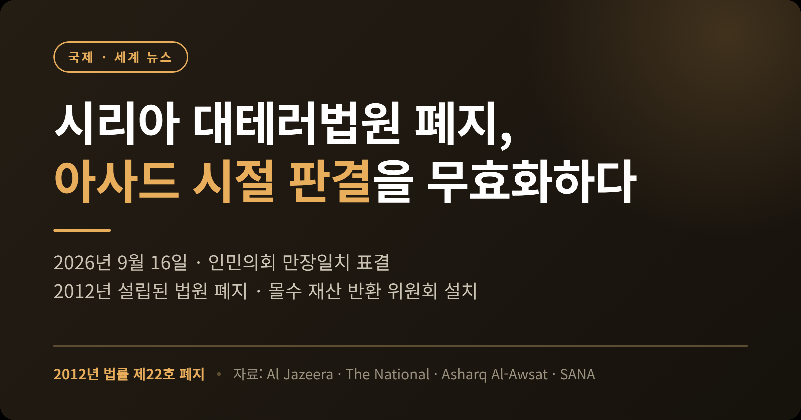
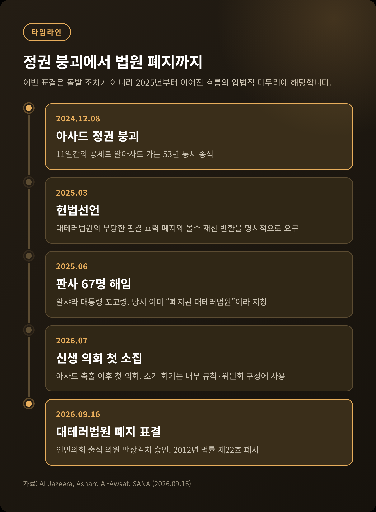
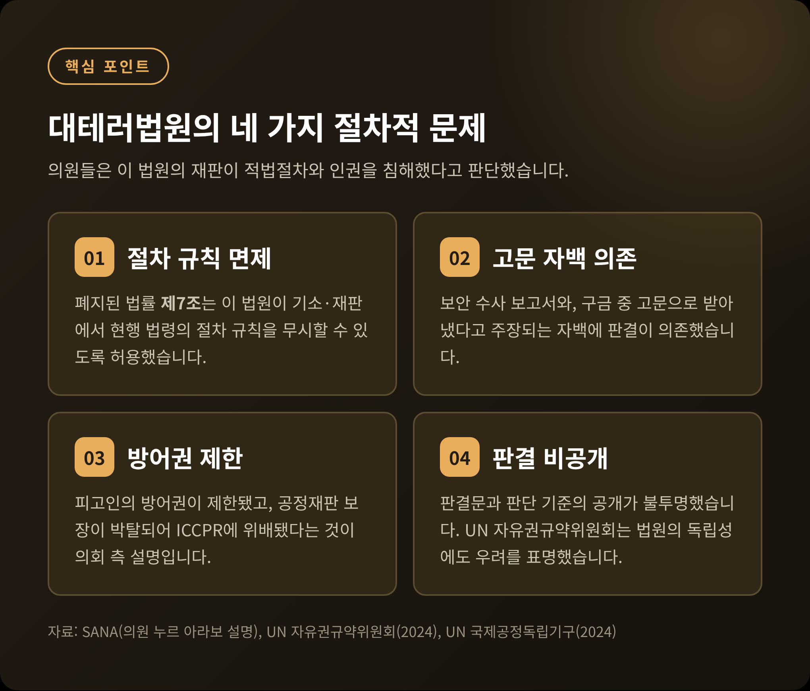
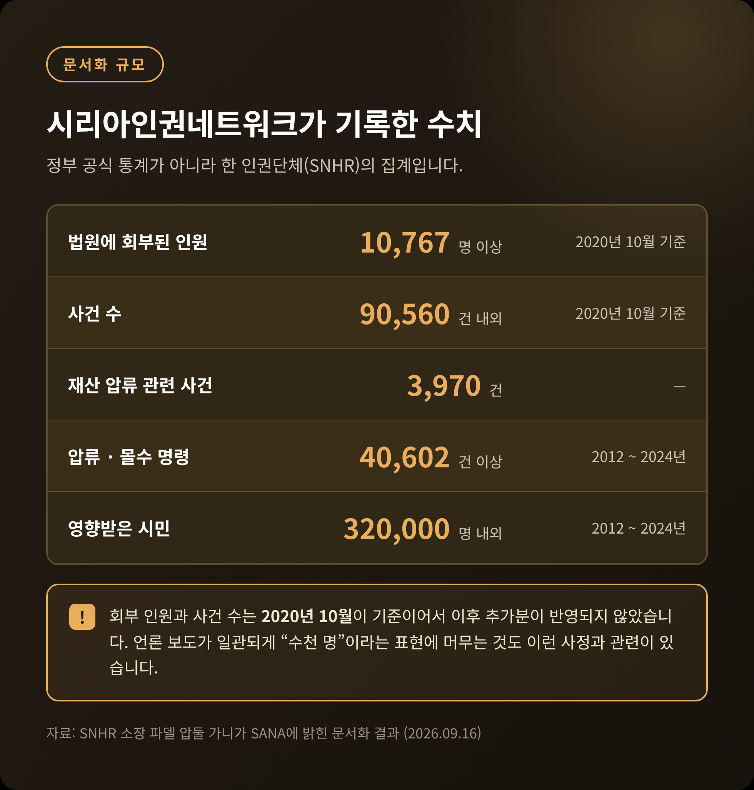
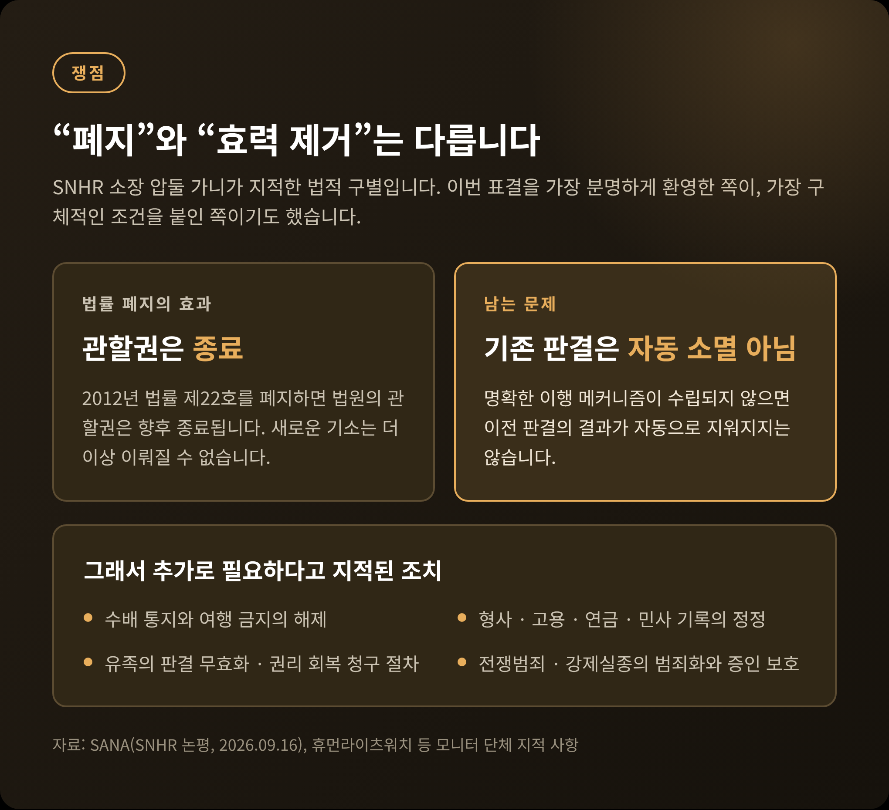
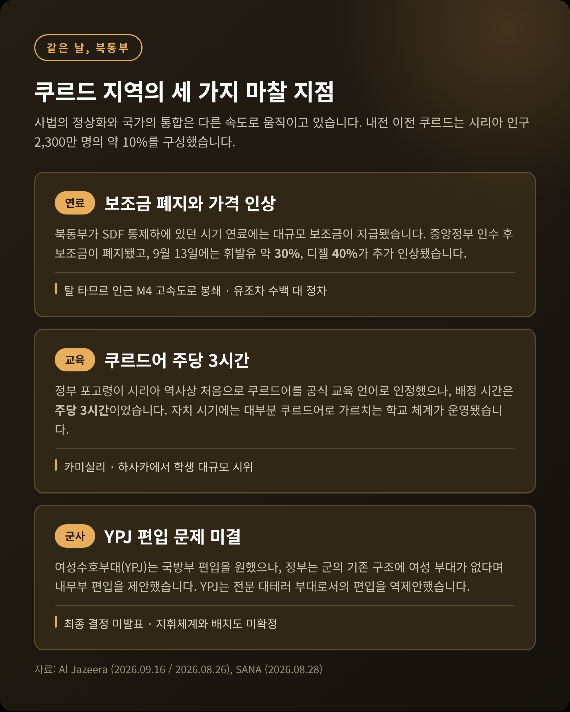

이번 글에서는 2026년 9월 16일 시리아 인민의회가 통과시킨 대테러법원 폐지 법안을 정리해 보겠습니다. 아사드 정권이 반대자를 기소하던 법원을 없애고, 그 판결의 법적 효력까지 무효화하는 내용입니다. 같은 날 북동부에서는 쿠르드 지역의 도로가 봉쇄됐습니다. 두 장면을 함께 놓고 보겠습니다.

시리아 인민의회는 9월 16일 수요일 대테러법원을 폐지하는 법안을 표결에 부쳤습니다. 결과는 출석 의원 만장일치 승인이었습니다. 제1차 임시 입법회기의 세 번째 회의에서였습니다.
폐지 대상은 2012년 법률 제22호입니다. 이 법이 대테러법원의 설립 근거였습니다.
법안은 폐지 선언에서 그치지 않았습니다. 최고사법위원회가 전문 사법위원회들을 구성해, 법원이 내린 부당한 판결의 효력을 무효화하도록 했습니다. 같은 위원회가 압류·몰수된 재산의 원상회복도 관장합니다. 계류 중인 사건은 보존하거나 관할 사법기관으로 넘깁니다.
재산을 돌려받는 사람에게는 실질적인 배려도 담겼습니다. 대테러법원과 야전법원, 군사법원이 2011년 3월 15일부터 2024년 12월 8일 사이에 내린 판결로 몰수됐던 자금과 재산을 되돌려받을 경우, 소유권 환원에 따르는 모든 세금과 수수료, 비용을 면제받습니다.
두 날짜는 각각 내전의 시작과 아사드 정권의 붕괴일입니다. 법안이 겨냥한 시간의 범위가 그대로 드러나는 셈입니다.

대테러법원은 2012년에 만들어졌습니다. 바샤르 알아사드 당시 대통령이 자신의 통치에 대한 봉기를 진압하려던 시기입니다. 시리아 국영통신 SANA는 이 법원이 기존 최고국가보안법원을 대체하는 기구였다고 설명합니다.
이 법원은 수천 명의 시리아인을 '테러 관련' 혐의로 기소했습니다. 영국 매체 더 내셔널은 기소 대상에 평화적 활동가들이 포함됐다고 전했습니다.
절차의 문제는 구조적이었습니다. 폐지된 법률 제7조는 이 법원이 기소와 재판 과정에서 현행 법령의 절차 규칙을 무시할 수 있도록 허용했습니다. 의원 누르 아라보는 이 법원이 적용 법령상의 절차 준수 의무에서 면제되어 있었고, 그 결과 피고인의 공정재판 보장이 박탈되어 시민적·정치적 권리에 관한 국제규약에 위배됐다고 설명했습니다.
판결의 근거도 문제였습니다. 보안 수사 보고서와, 구금 중 고문으로 받아냈다고 주장되는 자백에 의존했다는 것입니다. 방어권은 제한됐고 판결문과 판단 기준의 공개는 불투명했습니다.
국제기구의 평가도 같은 방향이었습니다. UN 자유권규약위원회는 2024년 이 법원을 설립한 2012년 법률이 핵심적인 사법적 보장을 충분히 제공하지 못했다고 지적했습니다. 임의적 구금과 고문 또는 학대, 법원의 독립성에 대해서도 우려를 표명했습니다. UN 국제공정독립기구는 같은 해 보고서에서 이 법원이 아사드 시절 보안기관에 구금된 사람들을 기소할 수 있게 한 사법 시스템의 일부였다고 평가했습니다.

시리아인권네트워크(SNHR)가 문서화한 수치가 있습니다. 소장 파델 압둘 가니가 SANA에 밝힌 내용입니다.
2020년 10월 기준으로 최소 10,767명이 이 법원에 회부됐고, 사건 수는 약 90,560건입니다. 재산 압류와 관련된 사건은 3,970건이었습니다. 2012년부터 2024년까지 압류·몰수 명령은 최소 40,602건이 내려졌고, 그 영향을 받은 시민은 약 32만 명에 이릅니다.
다만 이 수치는 정부 공식 통계가 아니라 한 인권단체의 집계입니다. 회부 인원과 사건 수는 2020년 10월이 기준이어서 이후 추가분이 반영되지 않았습니다. 언론 보도가 일관되게 "수천 명"이라는 표현에 머무는 것도 이런 사정과 무관하지 않습니다.
숫자를 단정하기는 어렵습니다. 그럼에도 압류 명령 한 건이 여러 가족의 생계를 건드렸다는 점만은 분명해 보입니다.

첫째, 이번 표결은 신생 의회의 첫 주요 입법 조치에 해당합니다.
아사드 정권은 2024년 12월 8일 무너졌습니다. 11일간의 전격 공세가 알아사드 가문의 53년 통치를 끝냈습니다. 그 뒤 처음 구성된 의회가 2026년 7월에 소집됐습니다. 초기 회기는 내부 규칙과 위원회를 구성하는 데 쓰였습니다. 그 정비를 마치고 내놓은 첫 주요 결정이 과거사 청산이었던 것입니다.
둘째, 이번 조치는 갑작스러운 결정이 아닙니다. 흐름의 마무리에 가깝습니다.
2025년 3월 헌법선언은 이미 이 법원의 부당한 판결의 효력을 폐지하고 몰수 재산을 반환할 것을 요구했습니다. 2025년 6월에는 아흐메드 알샤라 대통령이 포고령으로 이 법원에서 근무했던 판사 67명을 해임했습니다. 주목할 점은 표현입니다. 알샤라는 당시 이미 이 법원을 "폐지된 대테러법원"이라고 지칭했습니다.
예전엔 신당국이 이 법원을 사실상 기능정지 상태로 취급하는 데 그쳤습니다. 지금은 의회 입법으로 그 상태가 법적으로 확정됐습니다. 이번 표결의 성격은 새로운 폐지라기보다 사실상의 상태에 법적 근거를 부여한 것에 가깝습니다.
의회의 논의는 처음 다른 방향에서 출발했습니다.
의원 오마르 하예스의 설명에 따르면, 의회는 먼저 기존 대테러법의 개정 가능성을 검토했습니다. 그러나 논의 끝에 법원 자체와 그 결과적 효력을 폐지해야 한다는 결론에 도달했습니다. 하예스는 이 결정이 테러 관련 사건을 규율할 새 법률의 길을 열어준다고 덧붙였습니다.
의원들의 판단 근거는 재판 자체였습니다. 해당 법원의 재판이 적법절차와 인권을 침해했다는 것입니다.
의원 야세르 알샤하다는 만장일치가 이 사안이 시리아인에게 갖는 중요성을 반영한다고 평가했습니다. 그는 이 법안을 시리아인의 권리를 회복하고 예외적 법률과 법원의 장을 닫는 한 걸음으로 규정하면서, 수십 년간 시리아인을 해친 부당한 법률 전반에 대한 포괄적 재검토가 뒤따르기를 희망한다고 밝혔습니다.
다만 새 대테러법의 내용과 제정 일정은 아직 공개되지 않았습니다.
이번 표결을 가장 분명하게 환영한 쪽은 인권단체였습니다. 그리고 가장 구체적인 조건을 붙인 쪽도 인권단체였습니다.
SNHR 소장 압둘 가니는 법률 제22호의 폐지를 필요한 헌법적·권리적 조치로 평가했습니다. 그러면서 이것이 끝이 아니라 법적·제도적 과정의 시작이라고 규정했습니다.
그가 지적한 구별이 핵심입니다. 법률을 폐지하면 법원의 관할권은 향후 종료됩니다. 그러나 명확한 이행 메커니즘이 수립되지 않으면 이전 판결의 결과가 자동으로 지워지지는 않는다는 것입니다.
그래서 그는 추가 조치를 열거했습니다. 수배 통지와 여행 금지의 해제. 형사·고용·연금·민사 기록의 정정. 사망자와 강제실종자의 유족이 판결 무효화와 권리 회복을 청구할 수 있도록 하는 절차.
제도적 공백을 지적하는 목소리도 있습니다. 휴먼라이츠워치 등 모니터 단체들은 시리아 국내 법체계가 전쟁범죄와 강제실종을 범죄로 규정하지 않고 있으며 증인 보호 규정도 없다고 지적해 왔습니다. 2025년 5월 알샤라가 설립을 발표한 국가실종자위원회와 국가이행기정의위원회의 권한 범위에도 불명확한 부분이 남아 있습니다.
국제 전문가들의 반응은 환영과 유보가 함께였습니다. 중동연구소의 찰스 리스터는 이 "법원"이 정치범의 대량 투옥과 처형을 승인하는 도구로 설립됐다고 평가했습니다. 오클라호마대의 조슈아 랜디스는 이 결정이 시리아 국민에게 좋은 소식이라고 하면서도, 새 정권이 적절한 기소와 투명한 절차 없이 반대자를 투옥할 대안적 방법을 찾지 않기를 바란다고 덧붙였습니다.

표결이 이뤄진 9월 16일, 시리아 북동부 쿠르드 지역에서는 다른 장면이 펼쳐졌습니다.
시위대가 탈 타므르 인근 M4 고속도로를 봉쇄했습니다. 유조차 수백 대가 발이 묶였습니다. 시위대는 카미실리와 르메일란 유전에서 오는 트럭을 차단하고, 가격 인상이 철회되지 않으면 도로를 열지 않겠다고 선언했습니다.
원인은 연료 가격입니다. 북동부가 쿠르드 주도의 시리아민주군(SDF) 통제하에 있던 시기, 연료에는 대규모 보조금이 지급됐습니다. 중앙정부가 통제권을 인수한 뒤 그 보조금이 폐지되면서 가격이 올랐습니다. 9월 13일에는 정부가 휘발유를 약 30%, 디젤을 40% 추가 인상했습니다. 정부는 미국·이스라엘의 이란 전쟁으로 인한 국제 유가 상승과 해안 바니야스 정유소의 보수 작업을 이유로 들었습니다.
교육 문제도 겹쳤습니다. 카미실리와 하사카에서는 학생들의 대규모 시위가 이어졌습니다. 정부 포고령이 시리아 역사상 처음으로 쿠르드어를 공식 교육 언어로 인정했지만, 주당 3시간만 배정한 데 대한 반발입니다. 쿠르드 측은 자치 시기에 대부분 쿠르드어로 가르치는 학교 체계를 운영해 왔습니다.
내전 이전 쿠르드는 시리아 인구 2,300만 명의 약 10%를 구성했습니다. 아사드 왕조 아래에서 장기간 소외됐고, 전쟁 중 북동부에 사실상의 자치구역을 구축했습니다. 중앙정부가 그 지역의 통제를 회복하는 과정에서, 자치 시기에 누렸던 권리를 잃을 것이라는 불안이 커지고 있습니다. 알샤라는 쿠르드어와 정치적 권리에 대한 헌법적 보호를 반복해 약속했습니다.
통합 과정은 17개월에 걸쳐 진행됐습니다.
2025년 3월 10일 알샤라 대통령과 마즐룸 압디가 북동부 민간·군사 기구의 국가 편입, 휴전, 쿠르드 공동체의 권리 보장에 합의했습니다. 합의는 영토 통합을 확인하고 분리 요구를 거부했습니다. 이후 이행 방식과 지휘체계를 둘러싼 이견이 이어지다가, 2026년 1월 휴전과 전면 통합 합의로 정리됐습니다. 그리고 2026년 8월 25일, 압디가 다마스쿠스 대통령궁에서 SDF의 임무 종료와 독립 군사조직으로서의 해체를 공식 발표했습니다.
압디는 그날 시리아 역사에서 중요한 한 페이지가 넘어갔다고 말했습니다. 전장에서 건설의 장으로, 무기의 시대에서 평화의 시대로 향하는 전환의 시작이 되기를 바란다는 표현도 함께였습니다.
평가는 갈립니다.
아랍현대시리아연구센터의 나바르 사반은 다마스쿠스 권한 밖의 최대 조직 무력이 독립적 존재를 끝냈고, 국가가 단일 군 지휘체계와 국경·공항·전략자원에 대한 통일적 통제를 회복하는 과정을 시작할 수 있게 됐다고 평가했습니다. 다만 그는 형식적 병합은 완료됐으나 통일된 군사 문화와 지휘체계를 만드는 데는 훨씬 오래 걸릴 것이라고 유보를 달았습니다. 포용적 제도와 단일한 국가 지휘체계가 있어야 통합이 지속가능해진다는 것입니다.
킹스칼리지런던의 롭 가이스트 핀폴드는 다른 각도에서 봤습니다. SDF의 해체는 SDF가 레버리지를 잃어가는 지속적 추세의 일부이며, 미국이 SDF에 더 이상 보호적 지위를 부여하지 않는다는 신호를 보냈기 때문이라는 분석입니다. 그는 이것이 정부의 조건으로 이뤄진 합의라고 보면서도, 막후의 미국 압력으로 시리아 정부가 SDF의 남은 요구 일부에는 양보했을 가능성이 크다고 덧붙였습니다.
쿠르드 사회 안의 시선도 하나가 아닙니다. 일부 정치인은 통합을 쿠르드가 새 시리아 건설에 참여하고 헌법을 통해 권리를 요구할 수 있는 문으로 환영합니다. 다른 이들은 이를 튀르키예와 미국의 압력의 결과이며 쿠르드 이익에 잠재적으로 해롭다고 봅니다.
불신에는 배경이 있습니다. 현 정부는 해산된 반군 조직과 관련됐던 인물들이 이끌고 있습니다. 여기에는 하야트 타흐리르 알샴이 포함되고, 그 전신인 알누스라 전선은 한때 알카에다와 연계됐습니다. 다수의 전 반군 조직은 SDF와 교전한 이력이 있으며, SDF 역시 때때로 아사드 정권과 협력했다는 비난을 받았습니다. 사반의 정리가 이 상황을 잘 요약합니다. 많은 아랍 공동체는 중앙 기구의 복귀를 환영할 수 있지만, 쿠르드 공동체는 더 신중할 가능성이 크다는 것입니다. 평화를 원하면서도 언어와 교육, 정치적 대표성, 지역 치안에 관한 보장이 필요하다는 뜻입니다.
미해결 쟁점도 남았습니다. SDF의 여성수호부대(YPJ)는 국방부 편입을 원했으나, 정부는 군의 기존 구조에 여성 부대가 없다며 내무부 편입을 제안했습니다. YPJ는 전문 대테러 부대로서 내무부에 들어가는 방안을 역제안했습니다. 최종 결정은 발표되지 않았습니다. 현지의 알렉산더 맥키버는 이를 여성의 전투·중보안 역할을 이전에 거부했던 정부로서는 상당한 타협이라고 평가하면서도, 어떤 전투원이 어디에 배치되고 누구에게 보고하는지가 여전히 답이 없다고 지적했습니다.

첫째, 재산 반환 절차의 실행 가능성입니다. 최고사법위원회가 전문 사법위원회를 언제 구성하고, 신청을 어떻게 접수하며, 처리에 얼마가 걸릴지는 아직 공개되지 않았습니다. SNHR 집계로 몰수 명령이 4만 건을 넘고 영향받은 시민이 약 32만 명이라면, 절차의 설계가 결과를 좌우할 것입니다.
둘째, 이행기 정의의 제도적 기반입니다. 전쟁범죄와 강제실종의 범죄화, 증인 보호 규정, 위원회 권한의 명확화가 과제로 남아 있습니다. 2026년 4월에는 다마스쿠스 제4형사법원에서 구정권 고위 인사에 대한 시리아 내부 첫 재판이 시작됐습니다. 이 절차가 어떤 기준으로 운영되는지가 하나의 시험대가 될 것입니다.
셋째, 국제사회의 반응입니다. 미국은 2026년 8월 24일 시리아의 테러지원국 지정을 해제했습니다. 1979년 지정 이후 47년 만입니다. UN 안전보장이사회는 2026년 7월 시리아의 이행기 정의와 실종자 문제를 다루는 아리아 방식 회의를 열었습니다. 다만 이번 표결 자체에 대한 각국 정부나 UN의 공식 성명은 아직 확인되지 않았습니다.
넷째, 한국과의 접점입니다. 한국은 2025년 4월 10일 다마스쿠스에서 시리아와 외교관계를 수립했습니다. 조태열 당시 외교장관이 아스아드 알샤이바니 시리아 외교장관과 공동성명에 서명했습니다. 이로써 한국은 북한을 제외한 UN 회원국 191개국 전체와 수교를 완결했습니다. 다만 영사 업무는 주레바논 대한민국 대사관이 겸임하고 있습니다. 관계의 제도적 기반은 아직 얇은 편입니다. 재건 협력이나 인도적 지원을 검토한다면, 상대국의 사법 제도가 어떻게 재편되는지를 읽는 일이 실무의 출발점이 될 것입니다.
정리하면 이렇습니다.
9월 16일 시리아 의회가 한 일은 이미 멈춰 있던 법원에 법적 사망 선고를 내린 것입니다. 상징의 무게는 분명합니다. 신생 의회가 첫 주요 입법으로 과거사 청산을 택했고, 반대표는 없었습니다.
그러나 같은 날 북동부의 고속도로는 막혀 있었습니다. 사법의 정상화와 국가의 통합은 다른 속도로 움직이고 있습니다.
남는 질문은 결국 하나입니다 — 판결을 지운다는 선언이 한 사람의 서류 한 장을 실제로 고쳐줄 수 있는가.
평가는 독자 여러분께 맡기겠습니다. 다만 이 사안을 계속 지켜볼 가치가 있느냐고 물으신다면, 그렇다고 답하겠습니다.